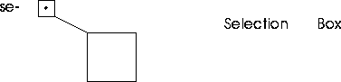

[N-World Contents] [Book Contents] [Prev] [Next] [Index]
Introduction to N-Paint
In this chapter, we'll Introduce N-Paint, briefly introduce you to its interface, and create a simple 2D image.
In This Chapter
You'll learn techniques for:
Getting Started
What is N-Paint?
You can use N-Paint to create digital images, such as backgrounds or detailed texture maps. Of course, it's loaded with features to enhance your productivity, like special brushes and custom Tool Boxes. With N-Paint, you can:
- Apply any ink through any brush or to the entire canvas. Use inks like recolor, equalize, posterize, colorize, randomize, blur, sharpen, shrink, expand, noise, mosaic, distort, warp, shift, flip, mirror, magnify, emboss, and more.
- Perform image processing, including equalize, IHS or RGB recolor (using a built-in curve editor), or apply powerful despeckle filters for dust removal.
- Pull mattes using edge detection or chroma keys.
- Composite rendered images directly onto a paint canvas (using N-Dynamics).
- Save your images in 3 or 4 component TIFF, SGI (RGB/RGBA/BW), or TPX formats.
N-Paint is also completely drivable by N-Dynamics, Nichmen's animation choreography package, which means that just about any 2D operation can be animated from a script.
N-Paint Windows
There are two primary N-Paint windows; the Canvas window and the Menu window. The canvas contains the image you're working on, and the menu window contains the tools you use to manipulate the image.
Figure 1.1 N-Paint windows; top, the N-Paint canvas, bottom, N-Paint menu
N-Paint Modes
The four buttons across the top of the N-Paint menu let you select the current N-Paint mode. To change modes, (CLICK-L) on a button. The menu area changes to reflect commands for the current mode.
Selecting Tools
(CLICK-L) on the Tools button to display the tools menu. The tools menu has two primary sections: the Tool Box and the parameters section. Which menu items appear in the parameters section depends on which tool in the Tool Box is selected.
Figure 1.2 The Tools Menu
See the N-Paint Reference Guide for more information about the specific tools or parameters on the N-Paint menus.
Working with Images
Occasionally, you'll need to do things like erase an entire image, save an image to a file, or undo a mistake. These commands are located in the Commands section of the tools menu.
Figure 1.3 The Commands section of the Tools menu
- The Icons on the left edge of the commands menu bring up different menus you'll use to control the Canvas, Palettes, Shape History, and the Grid.
- Modes determine whether N-Paint is operating in normal 2D paint mode, 3D Mode, Distortion mode, or Pasteup mode.
- Matte commands control the matte element of a four component image. You can save the matte to a backup channel, erase it, or reverse it. You can also use the six buttons under Display to control how the matte is used or displayed.
- Image commands control the image on the canvas. You can Erase the Canvas, save it to a backup channel, and load or swap the image on the canvas with the one in the backup channel.
Images and the Canvas
When you select an image to work on, it becomes the current image. You can have more than one image loaded into memory at any one time, but only one image can be the current image.
The canvas is the N-Paint workspace. It is not associated with any single image. You can think of the current image as being loaded onto the N-Paint canvas, much as a painter has only one work at time on his easel.
In addition to the current image, you can have an image on the backup canvas. You can swap images back and forth between the canvas and the backup canvas.
Opening an Image
We're ready to begin painting! For this first session, we'll load and modify an existing image on disk.
1. (CLICK-L) on the Tools mode button.
- The Tools button is the leftmost of the N-Paint mode buttons.
2. In the Commands section of the tools menu, (CLICK-L) on the magenta edit field to the right of the word File.
- The Operations pop-up menu appears:
Figure 1.4 The image operations pop-up menu
3. (CLICK-L) on Open.
- A dialog appears for you to specify a file to load:
Figure 1.5 The Choose Directory and Filename dialog box
4. (CLICK-M) on the Directory field and enter the following directory:
/usr/local/ngc/demo/images/
5. (CLICK-R) on the Name field and select the following image from the list that appears:
hero.tif
6. (CLICK-L) on Do It to load the image.
- The image, hero.tif, appears on the canvas. It is also loaded into memory. With N-Paint, you can have several images loaded in memory, but only one of these can be displayed on the canvas at any given moment.
Modifying the Image
As you can see, the image is rather large, so let's scale it down to a more manageable size:
7. (CLICK-L) on File: again.
8. (CLICK-L) on Scale.
- The Create Scaled Image dialog appears:
Figure 1.6 Create Scaled Image dialog
9. Change Width to 333 and Height to 500.
- (CLICK-L) on the fields to edit them. If Numeric Keypads have been activated in the Setup menu, a numeric keypad will appear:
Figure 1.7 A numerical keypad
- Note: When you scale an image, you usually want to retain the image's aspect ratio. Aspect ratio is basically the relationship between an image's height and width. To avoid distortion when scaling, you'll want to maintain aspect ratio. If you scale an image horizontally by 50%, scale it vertically by the same factor!
Saving the Image
Now that we've created a scaled down version of our original image, we'll need to save it so that we can work on it in the future.
10. (CLICK-L) on the File: field.
- The Image Operations pop-up menu appears.
11. (CLICK-L) on Save As.
- The Save Canvas to File dialog appears:
Figure 1.8 The Save Canvas to FIle dialog box
- Specify a directory and filename for the new image.
- Note: N·World is distributed with the directories under /usr/local/ngc/ write-protected. This means an error will result if you try to save anything to these directories. While you're working through this tutorial, be sure to save items to directories for which you have adequate permissions. Usually, your home directory is a safe choice. Consult you system administrator if you have any questions.
- Note: If you want to save an image to its original filename, just (CLICK-L) on File>Save. N-Paint saves the image with no additional input from you.
12. (CLICK-L) on the Format field.
- The Image Format pop-up menu appears. You can choose from five file formats:
Figure 1.9 Image Format pop-up menu
13. (CLICK-L) on RGBA.
- The image is now saved in RGBA format.
Viewing the Matte
Most color computer images are made of three layers (sometimes called "channels"). There are separate channels for the Red, Green, and Blue color components of the image (hence "RGB"). Some formats, such as TIFF, RGBA, and TPX, support a fourth, or matte, channel (sometimes called the "Alpha" channel).
Like an airbrusher's stencil, the matte protects the area beneath it from being painted on. Real stencils, however, have only two modes: they either completely prevent paint from reaching portions of an image, or they do nothing. Digital mattes, however, can allow some of the ink through. Opacity is the characteristic which controls how much paint actually gets through the matte to the canvas.
Our new image already has a matte defined for it, but in a later section we'll learn how to pull our own mattes using several different methods.
You control the matte with the Matte commands, which are located in the Commands section on the far right of the Tools menu.
Figure 1.10 Matte commands
14. (CLICK-L) on View in the Matte section.
- The matte channel appears over your image, displayed in red. (We'll describe how to change the matte's display color later.)
15. (CLICK-L) on Use in the Matte section.
- Use makes the matte active, protecting the area under the matte from being painted on. (See the N-Paint Reference Guide to learn how the other matte modes work.)
Painting
We're ready to modify this image in accordance with our producer's wishes. She has asked that we provide a moon in the scene over the hero's right shoulder. And she's asked us to do something to spruce up the background a bit, so we'll add some mountains and other details.
Creating the Background
We'll use the polygon brush to draw some jagged rocks and a mountain path into the background of the image.
16. (CLICK-L) on the Polygon tool in the Tool Box.
Figure 1.11 The Polygon tool
- The Polygon tool allows you to define a series of points, which are then connected into a polygonal solid.
17. (CLICK-L) on the Ink field.
- A menu of inks available for the Polygon tool appears:
Figure 1.12 Inks for Shape Operations
18. (CLICK-L) on the Color ink.
- The ink parameters section of the menu changes to reflect the new ink:
Figure 1.13 Color ink parameters
19. (CLICK-L) on the Color field in the Ink Parameters section of the menu.
- The Color Editor menu appears. You'll use this often while working in N-Paint to select colors.
Figure 1.14 The Color Editor
20. (CLICK-L) on a shade of grey to use for the mountains in the background, then (CLICK-L) on Exit.
- The Color Editor can be used in a variety of different ways. You can select colors:
- For more details about using sliders, see the N-Paint Reference Guide. (We'll experiment with the Color Editor later on in this book.)
21. Use the Polygon tool to draw the outline of the rocks.
- (CLICK-L) on the first point of your polygon (Figure 1.16 shows a sample progression of mouse clicks for creating a simple outline). Each successive (CLICK-L) defines a new point in the polygon, until you terminate the operation with a (CLICK-M).
Figure 1.15 The Polygon tool cursor
Figure 1.16 Drawing the mountains
- Note that the mountains are not drawn over the portions of the character protected by the matte.
Undoing your Painting
If you want to unpaint some of the paint you've applied to the canvas, just (CLICK-L) on the Undo button in the commands section of the menu:
Figure 1.17 The Undo and Redo buttons
- The Undo button undoes painting incrementally; you can undo as many actions as you like, up to the limit specified in the Paint Setup menus. If you undo something you wish you hadn't, you can (CLICK-L) on Redo to reapply the change.
Repeating Shapes
Grey mountains are kind of flat and uninteresting. Because N-Paint keeps a history of any shape operations applied to an image, we can redraw the same shape with a different kind of ink.
22. (CLICK-L) on Inks, and select the Gradient 2 ink.
- The gradient ink is designed to create a gradient using two colors across a shape. You pick the two colors and the direction of the gradient.
Figure 1.18 The Gradient Ink parameters
23. (CLICK-L) on the Top color field, and use the Color Editor to select an appropriate color for moonlit stone.
24. (CLICK-L) on the Bottom field.
- A Color Editor appears. For the bottom color we'll choose the same color we used to draw the mountains in the first place.
25. (CLICK-L) on the Pick button at the bottom of the Color Editor.
- When you (CLICK-L) on Pick, the color picker tool appears:

Figure 1.19 The color picker tool
- The selection point covers a single pixel. The color of that pixel is shown in the large box attached to the selection point. To pick a color, move the color picker tool until the color in the Selection Box matches the color you're looking for. When it does, (CLICK-L) to select the color.
- For now, move the selection point onto the mountains and (CLICK-L). The mountain's shade of grey now occupies the bottom color field.
26. (CLICK-L) on the symbol to select a vertical gradient.
- You can also draw gradients horizontally, radially (from the center of a circular area) or both horizontally and vertically at the same time.
Now, we'll want to use the exact same shape we used earlier to define the outline of the mountains. We could attempt to trace the mountains with the cursor or we could just reuse the shape for our new drawing operation.
27. (CLICK-L) on the right facing arrow next to Show in the Tool Parameters section of the menu.
Figure 1.20 Show Shape commands
- The Show command toggles shape highlighting on and off, and highlights the last shape you drew on the canvas. In this case, the mountains themselves are highlighted. You can perform paint operations on this shape as if you had just drawn it.
28. (CLICK-L) on the Repeat button.
- The Gradient ink is applied to the canvas through the same shape you used earlier to define the mountains. N-Paint remembers all the shapes you create during an N-Paint session. (CLICK-L) on the left and right arrows next to the Show button to cycle through them.
Using the Fill Tool
Now we'll add a path through the mountains for our hero to walk on.
29. Select the Polygon tool from the Tool Box.
30. (CLICK-L) on Outline.
- In outline mode, the tool will only draw an outline around the shape you define. You can control the width of the outline.
31. (CLICK-L) on Width; change the value to 0.2
32. (CLICK-L) on the Color field, and select an appropriate color for a dirt path.
33. (CLICK-L) on Spline.
- When spline is toggled, the hard corners of shapes you draw are "softened" using a spline algorithm.
34. Draw the path on the image.
- Here's what ours looked like.
Figure 1.21 The road
Now we'll fill the path in with an appropriate color using the gradient ink again, this time applied with the Fill tool.
35. (CLICK-L) on the FIll tool.
Figure 1.22 The Fill tool icon
- You can configure the fill tool to fill an area Until it encounters a different color, or While the area being filled remains the same color. You can adjust the precision with which these edges are determined by changing the values for Range and Soft.
36. Select the Gradient 2 ink again.
- Let's choose a nice brown to use for our dirt path. This color will serve as the color at the bottom of the image, nearest to our hero.
37. (CLICK-L) on Top, and use the Color Editor choose a shade of brown.
Now we'll use the same color for the bottom of the gradient, but we'll use the color editor to change the intensity of the color to simulate it fading into the distance.
38. (CLICK-L) on Bottom.
- (CLICK-L) in the previous color rectangle to select the color you just chose for the top of the gradient, as shown in Figure 1.23.
39. (CLICK-L) on the Edit button at the bottom of the Color Editor.
- A row of sliders appears, which you can use to manipulate the Intensity (I), Hue (H), and Saturation (S) of the color. In this case we'll just bring the intensity down a bit.
Figure 1.23 Editing Colors
40. (DRAG-L) on the I slider, moving it to the left.
- As you move the slider, the color in the current color bar darkens.
41. (CLICK-L) on Exit when the color looks right.
Now that we've selected the two colors to use for our gradient, we're ready to fill in the polygon and create the road.
42. Move the Selection box of the Fill Ink cursor to the interior of the road, and (CLICK-L).
- The area confined within the outlines of the road is filled with a gradual color ramp.
Compositing an Image
For the last step in this part of the tutorial, we'll composite an image of the moon over our hero's right shoulder. You can have a go at creating your own moon, or use ours.
43. Load the following image file:
/usr/local/ngc/demo/images/moon.rgb
- Whether you use our moon or one you painted yourself, you must have both the moon image and the hero image loaded into memory in order to perform the composite.
44. Select the Cutout brush from the Tool Box.
Figure 1.24 The Cutout brush
45. Select the Pattern ink.
- The Pattern ink parameters appear in the ink parameters section of the menu:
Figure 1.25 Pattern ink parameters menu
46. (CLICK-L) on the current pattern square.
- A pop-up menu appears listing all the images loaded into memory. (CLICK-L) on the moon.rgb image.
47. (CLICK-L) on File>Select>hero to make the hero image active again.
- The moon image will be replaced by the hero image on the canvas.
48. Make sure that the matte is in Use mode.
- If necessary, (CLICK-L) on the Use button.
49. Move the cursor over the canvas, and place the moon just over the hero's right shoulder.
- When it's in position, (CLICK-L). The hero's matte will prevent the moon from being drawn over his body, so the moon looks like it actually behind the hero.
Here's what our hero looks like with the mountains, the road, and the moon added to the scene.
Figure 1.26 The hero with the moon and mountains added to the scene
Saving Your Work
We'll be working with this image in the next section, so let's save our new images to disk.
50. (CLICK-L) on File: > Save Many.
- The following dialog box appears:
Figure 1.27 Save images dialog
51. Make sure the paths and filenames are correct, then (CLICK-L) on Save.
- Your images will be stored safely on disk.
Congratulations!
You've modified and saved an image in N-Paint! The important thing to remember from this chapter is how inks and shape tools work together to provide you with lots of flexibility to be creative.
In the next chapter we'll work with brushes, experiment with some effects and recolor inks, and learn how to pull a matte
[N-World Contents] [Book Contents] [Prev] [Next] [Index]
 Another fine product from Nichimen documentation!
Another fine product from Nichimen documentation!
Copyright © 1996, Nichimen Graphics Corporation. All rights
reserved.